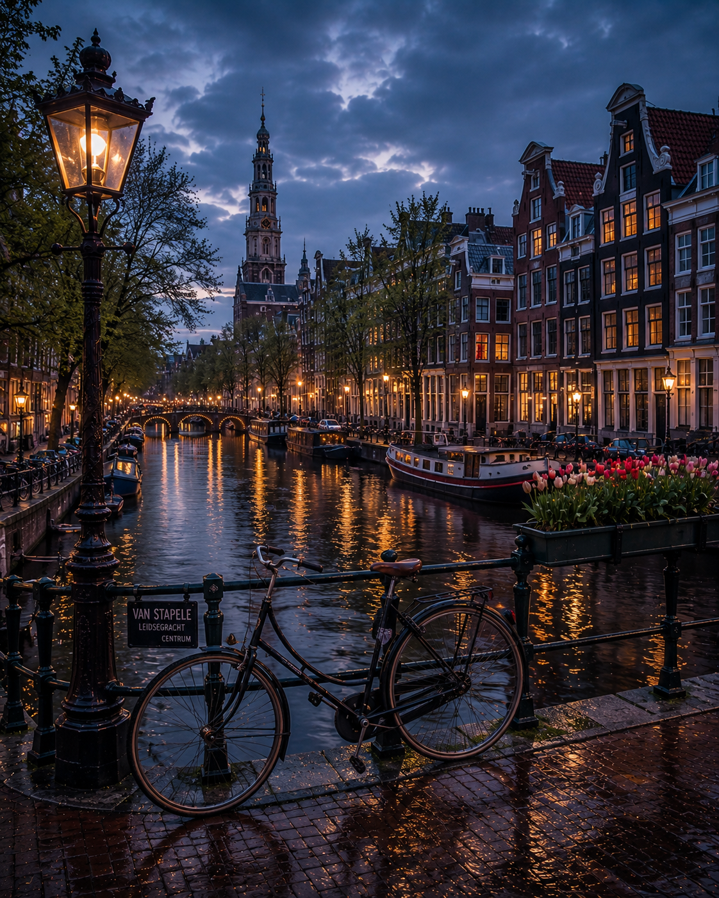
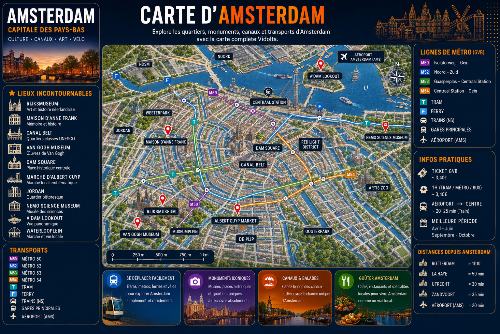
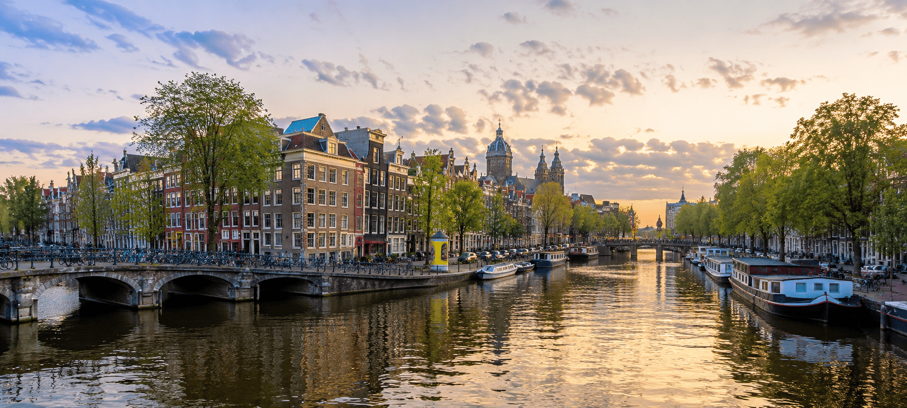

Le vélo reste le moyen le plus rapide et authentique pour explorer la ville.
Les canaux d’Amsterdam offrent une ambiance unique de jour comme de nuit.
De Jordaan à De Pijp, découvre les meilleurs cafés urbains de la ville.
Van Gogh Museum, Rijksmuseum et quartiers historiques incontournables.

Tramways, métro et ferries permettent d’explorer Amsterdam rapidement.
ExplorerLoue un vélo et découvre les canaux et quartiers emblématiques à ton rythme.
ExplorerReste connecté facilement pendant ton séjour aux Pays-Bas.
ExplorerDécouvre la ville autrement avec une croisière sur les canaux historiques.
ExplorerJordaan, De Pijp et Centrum offrent des ambiances totalement différentes.
ExplorerAmsterdam mélange culture urbaine, rythme détendu et architecture unique autour des canaux.
Entre les vélos, les péniches, les cafés modernes et les quartiers historiques, la ville possède une atmosphère impossible à retrouver ailleurs en Europe.
Chaque quartier offre une expérience différente : Jordaan pour l’ambiance locale, De Pijp pour les cafés tendance, Museumplein pour la culture et Centrum pour les canaux emblématiques.
Le vélo et les tramways sont les moyens les plus pratiques pour explorer la ville.
Jordaan, De Pijp et les rooftops au bord des canaux regroupent les meilleurs spots.
Croisières sur les canaux, musées, balades à vélo et quartiers historiques sont incontournables.
